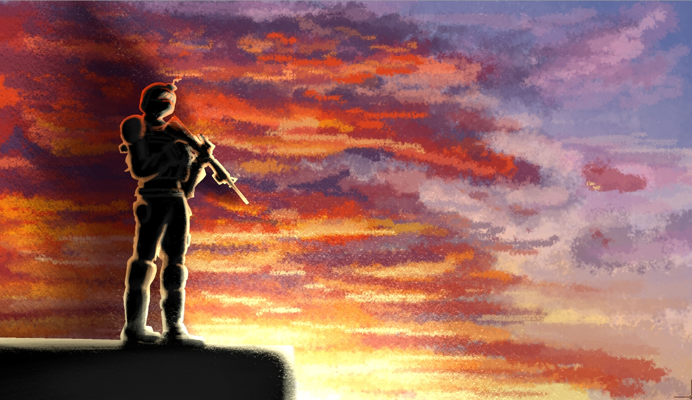

Military

Wepons
Nuclear weapons
Fusion bombs
High Fusion bombs were majoritaly used in WW4 as they were more effective than the fusion bombs by 20 times. They made up for 60% of all deaths that occurred during WW4 and the fallout that occurred produced more radiation then the incident at the Asoby nuclear power plant that had an exclusion zone of 60km. The exclusion zone after the high fusion bomb Captain fell on Eskia was 100km and created a crater with a depth of 1.5 km.
Nuclear missiles
The bigger nuclear missiles are used in bigger tanks and sea faring vessels while the smaller variety are used in air crafts. They use nuclear power to launch and are projectiles that get lodged into their target and explode, their shrapnel leaks radiation.
Chemical weapons
Hydrogen cyanide
Hydrogen cyanide, also referred to as the quiet killer because of the way it steals your breath and makes it hard to cry for help. It was used in WW2 and WW3 as a chemical weapon good in small inclosed spaces and a way to kill and torture hostages and cavilians.
VX (Venomus Xeinos)
It was used on letters and forms sent to military and political people to eliminate them. Used in WW2 and WW3. Was highly effective to the point letters to parliament were never handled by humans.
Biological weapons
Bacillus anthracis
Bacillus anthracis or the blue flu is a Biological weapon designed as an aerosol or powder and is inconspicuous as symptoms are almost identical to flu.
Pseudo Humans
Human like products of Project Protector. They are faster, stronger, require less food to survive and have animal attributes such as wings or venom. They were originally meant to take over human soldiers but their unpredictable nature has caused them to be a failed experiment and highly monitored in military environments.
Leading world powers
#1 - Draxian
Draxian is the leading country in the military. It holds the most nuclear weapons and is known for having a strict and strong military. Draxian has been a participant of all 4 world wars.
#2 - Virjansk
Although Virjansk is the smallest country in this list and has the least amount of people, it has a big faction dedicated to military scientific discoveries and is the leader for highest IQ in a country.
#3 - Ashax
Ashax is known for its free use of guns, the country is the biggest producer and user of guns and ammunition.
#4 - Deshistan
Deshistan has the biggest population and is the #1 producer of oil. They are known for their unmatched air force tactics and the absurd amount of tanks their army have.
#5 - Republic of Eskia
Formerly the leading military, after ww3 the change of government had them handing over all their nuclear weapons to Draxian. Although they no longer have any nuclear weapons their military still makes up for 40% of the population.
Cyber humans and exo-skellingtons
Augments to disabled humans, the augments are expensive and rare. It's only reserved for those who are able to pay for it, mainly rich people or high ranking military officers. Military grade exo-skellingtons are used by special ops for increased speed, armour and strength.
World Wars
The War of units (WW4)
The fourth world war, referred to as the war of units took place from April 13 2164 to
July 19 2184 and was between two main groups, commonly referred to as the East and South.
It was initially started when [redacted] bombed Draxians governmental building after they
had sent troops over to help stabilise the country but they saw it was an action to take
control of their land and government. Although the bombing caused Draxian to retaliate,
news articles from the time indicate a growing tension between Draxian, the east and
other world powers in the south. [redacted] had allied with its surrounding countries so,
when Draxian had retaliated they had declared war on Draxian and the war officially started.
The war ended when Draxian sent 3 nuclear bombs, Wind, Water and Captain on the capital of
[redacted] and the land became uninhabitable, there was a treaty sent out and the World Weapons
Committee was formed to prevent another war from happening.
Around 1 billion casualties civilian and military.
Key dates
April 13 2164 - [redacted] bombed Draxians government building.
April 14 2164 - Draxian declares war on [redacted] and allies of [redacted] declared war on Draxian.
August 17 2180 - [redacted]s head military operator was killed by Draxian delta force.
June 1 2184 - Draxian sent the bombs into [redacted] and 5/7 countries in the south surrendered.
July 19 2184 - WWC was formed and the war officially ended.
Aftermath
The production of nuclear weapons was prohibited by the WWC.
Nuclear power was declared only to be used for city power production.
Oil and coal is scarce and nuclear power has become a norm.
Nuclear safety is top priority and has very strict restrictions, nuclear plants that are affected
by earthquakes and natural disasters often have the most strict and highest safety standards.
War of winter (WW3)
The third world war took place between 2031 and 2056. It was also referred to as the
war of winter because it was fought in the northern most area of _______. There were
three main groups: the South, the Central Allies and the North. The war took place in
the countries in the north and conflicts heavily involved the use of chemical and
biological warfare.
Historians believe it began when the Eskia empire started to grow and caused worry in
the north. When the Eskia empire's government started to take a more communist approach
where the government owned all land and people. The growing tension finally snapped when
Ortrana noticed an Eskia ballistic missile submarine had been intercepting top secret naval
communications and Ortrana attacked it. Eskia told their allies that it was Ortrana who had
stolen naval secrets. This led to Eskia's allies attacking Ortrana and the north retaliating.
The Central Allies joined in 2040 after Eskia sent troops into Deshistan.
The war subsided after the Eskia empire struggled to grow enough food to feed the county in winter.
This led to famine killing 320 million people ¾ of its population and the people revolted. The Eskia
empire officially fell on 13 may 2056 when citizens stormed the parliament building and elected Yustaf
Monroe, who had been one of the few activists to survive the Eskia empire, to be the prime minister of
the republic of Eskia.
700 million deaths occurred 63% of deaths were civilian. The War of winters is known as the war with the
most civilan deaths.
Key dates
January 7 2031 - Ortrana spotted (EBS) Dejiyaha the Eskia ballistic missile submarine in their waters.
January 10 2031 - Ortrana launched an attack on the EBS and sank it.
January 12 2031 - Eskia declared war on Ortrana.
August 17 2043 - Scientists of Draxian develop animal - human hybrids and use them for warfare, these are later known as pseudo humans.
July 15 2056 - Famine kills 320 million people and Eskia citizens start to revolt.
July 28 - Yustaf Monroe becomes the prime minister of the republic of Eskia and declares an end to the war
Aftermath
The heavy use of chemical and biological warfare led to world laws being put in place so it cannot happen again.
Pseudo humans become ‘pets’ for the rich.